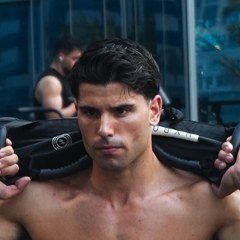

SUPER-ALE · La mia guida agli integratori
gli integratori che ti servono davvero
Quelli che consiglio ai miei clienti, con la dose, il momento giusto e il prodotto preciso. E quelli che puoi lasciare sullo scaffale.
Così eviti di perdere tempo e di sprecare soldi in integratori inutili. Se hai qualsiasi domanda, scrivimi su Instagram.

Creata da Alessandro PassalacquaFounder di SUPER-ALE